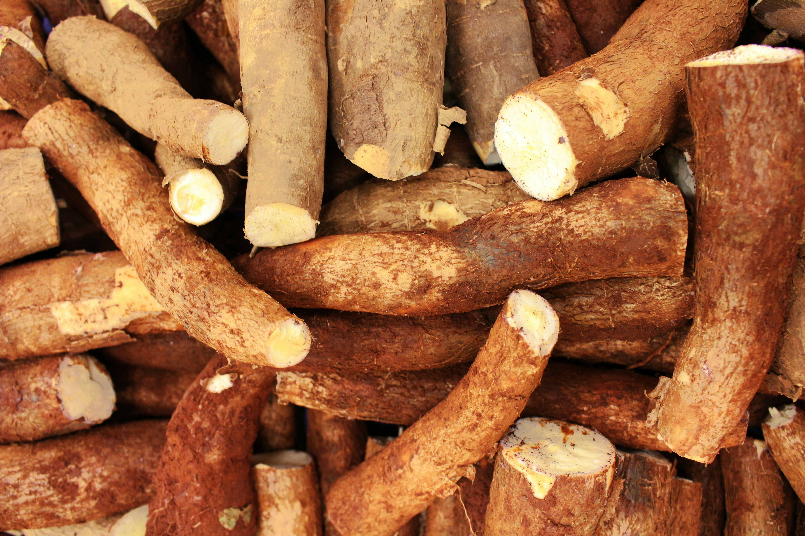

Our Vison
CassavaPro Jukwa Ltd, is a cassava processing company dedicated to producing high-quality cassava products for both local and international markets. We are set to become a leading cassava processing company in Ghana, known for our commitment to quality, sustainability, and community development in the Jukwa region. Our aim is to make a difference in our community by empower local farmers, create job opportunities, giving food to local schools and contribute to the economic growth of our region. We keep focus on a sustainable and environmentally friendly operation, minimizing our carbon footprint and promoting responsible practices throughout our supply chain.
Our Products
- Gari: A highly sought after product internationally, and African staple made food from processed cassava.
- Cassava Flour: A gluten-free alternative to wheat flour, used in baking and cooking.
- Cassava Starch: Used in various industries, including food, paper, and textiles.
- Biofuel: A sustainable energy source derived from cassava, driving innovation.
- Sorbitol: A versatile sugar substitute used in food and pharmaceutical products.
- By-Products: Peel and pulp can be used as animal feed and fertilizer preventing waste.
